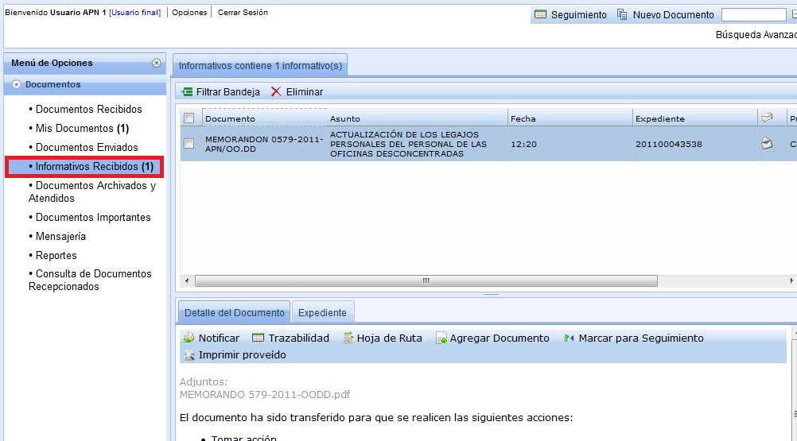

Informativos Recibidos:
Esta opción muestra todos los informativos enviados al usuario, cada vez que se le haya emitido una copia del documento. Es decir cuando el usuario selecciona el Botón Transferir, tiene dos opciones el Para(Persona a la que transferirá el Documento), CC(Persona(s) a la(s) que enviará como copia, las cuales para visualizar el Documento tendrán que ingresar a la Bandeja de Informativos).

Created with the Personal Edition of HelpNDoc: Easily create Help documents